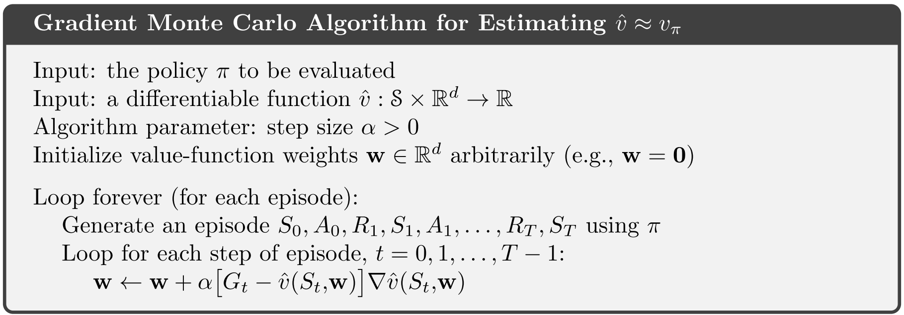
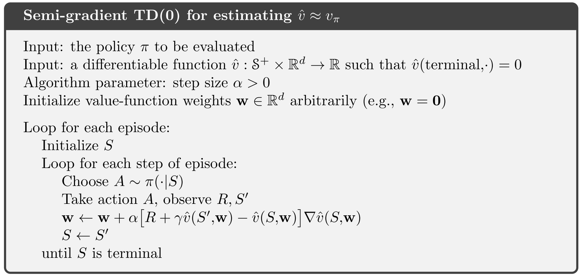
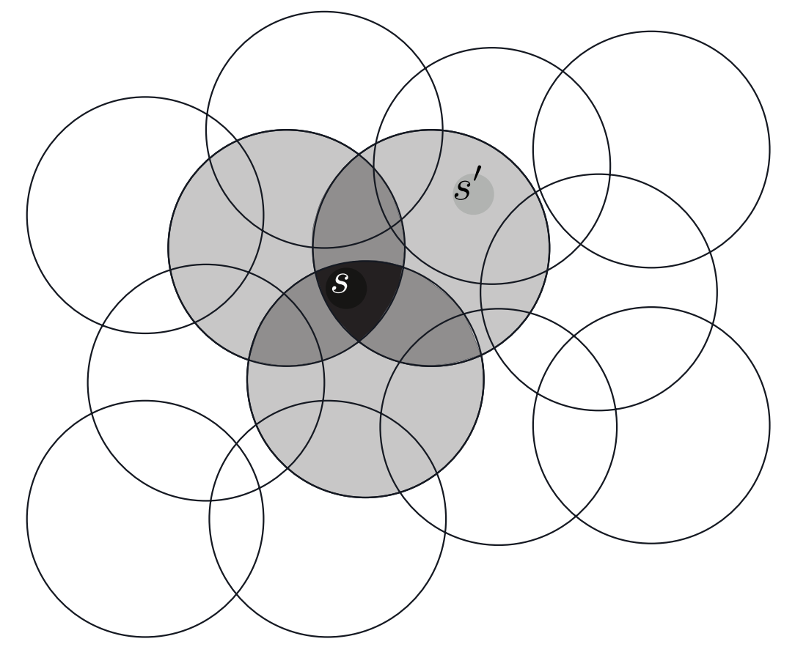
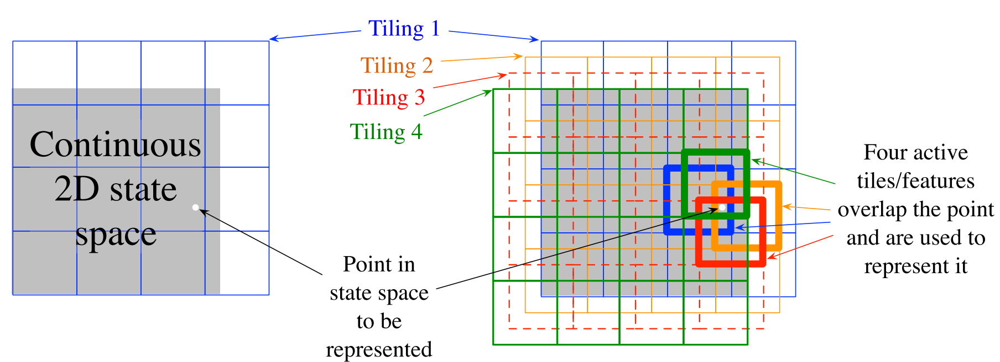
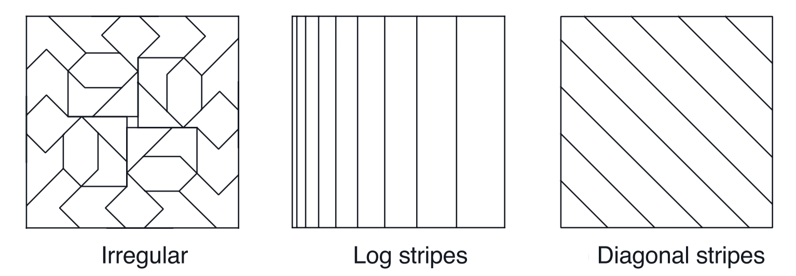
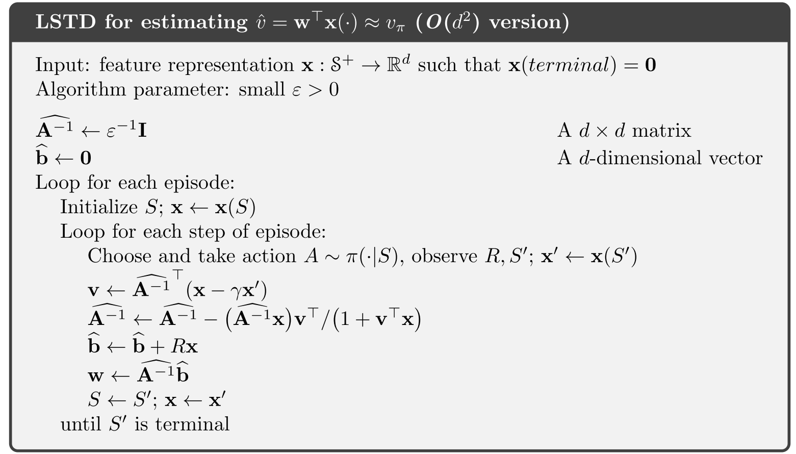

强化学习导论（九）- 在线策略的近似预测¶
前面八章讲的算法在使用旧的 Q(S) 时都是在对 Q 函数进行查表操作：采用数据表存储每个 state 的 value ，然后用各种各样的算法来更新这个 Q 表，直到收敛。在更新的过程中也能渐渐确定出对应的最优策略。
本章在 Q 函数的处理上，不再使用查表法，而是使用『函数近似』的方法，他和『查表法』的区别在于：
- 不再使用数据表来存储各个对应关系，而是直接用函数来表示这个关系。
- 使用『监督学习』，通过更新参数的方式来使函数收敛。
其优点在于，内存空间占用得到了较大优化（这是因为参数的个数通常远小于状态数量），同时，训练出来的函数其泛用性更佳。
9.1 Value-function Approximation¶
这一章开始，用参数化的形式表示 value function ，写作 \hat{v}(s,\mathbf{w}) ，其中 \mathbf{w} 为训练出来的特征权重。
value function 的更新可以简单表示为映射 s \mapsto u ，其中 s 表示用于更新的 state，u 表示被更新的 update target 。
- MC: S_t\mapsto G_t
- TD(0): S_t\mapsto R_{t+1}+\gamma \hat{v}(S_{t+1},\mathbf{w}_t)
- n-step TD: S_t\mapsto G_{t:t+n}
- DP: s\mapsto \mathbb{E}_\pi[R_{t+1}+\gamma\hat{v}(S_{t+1},\mathbf{w}_t)|S_t=s]
我们将这样的过程看作 input-output 样本，便能使用各种各样的『监督学习』方法来做训练，最终得到近似的 value function 。
9.2 The Prediction Objective (MSVE)¶
在监督学习中，我们需要设定一个目标函数来不断优化，这里我们考虑 value function 的『均方误差』：
其中 \mu(s)\geq 0, \sum_s\mu(s)=1 为 on-policy distribution ，是状态访问次数的分布，表示了我们对于各个状态的关注程度。
对于离散型的片段式任务，\mu 的定义为
其中 h(s) 表示状态 s 被选为初始状态的概率。
我们的目的就是要找到这个误差函数的极小值，得到极值点 \mathbf{w}^* ，进而得以确定近似 value function \hat{v}(s,\mathbf{w}^*) 。
9.3 Stochastic-gradient and Semi-gradient Methods¶
考虑采用随机梯度（SGD）的方法来完成上一节的目标，更新式为
其中的 v_\pi(S_t) 也可以是一个估计值 U_t ，此时，若满足下列条件，可以确保收敛
- U_t 是 v_\pi(S_t) 的无偏估计，即有 \mathbb{E}(U_t)=v_\pi(S_t)
- \sum_{n=1}^\infty \alpha_n = \infty , \sum_{n=1}^\infty\alpha_n^2<\infty
以 MC 为例，其算法伪代码如下

一些用到了自助法（bootstrapping）的估计，如
- n-step TD : G_{t:t+n}=R_{t+1}+\cdots+\gamma^{n-1}R_{t+n}+\gamma^n\hat{v}(S_{t+n},\mathbf{w}_t)
- DP : \sum_{a,s',r}\pi(a|S_t)p(s',r|S_t,a)[r+\gamma \hat{v}(s',\mathbf{w}_t)]
这些估计值都与权向量 \mathbf{w} 相关，被其偏置（biased），这类 target 代入梯度更新式后，只能得到部分梯度的下降，而非真正的梯度下降，故称其为『半梯度法（semi-gradient methods）』
半梯度法与普通的梯度下降形式一致，区别仅在于 target 的选取，即训练样本的 output 是否是 input 的无偏估计。
半梯度法虽然收敛性不如真正的梯度下降法，但他有如下优点：
- 半梯度法在线性模型下仍能确保收敛。
- 在可收敛的前提下，半梯度法收敛速度很快。
- 半梯度法可用于连续型任务，无需等待一个完整的 episode 结束。
下面给出一个使用半梯度法的示例：

9.4 Linear Methods¶
在线性近似的方法中，将 value function 看作 \mathbf{w} 的线性函数，此时为权重与特征的内积
代入更新式即为
上一节的半梯度 TD(0) 算法能够在线性函数逼近中收敛，迭代式为
也可写作
其中
当收敛时，有
这个值称为『TD 不动点』，根据一些定理可以证明确实能够收敛于此点。线性半梯度 TD(0) 算法的收敛值就是这个不动点，他有一个性质：
即 TD(0) 法得到的误差不超过 MC 法的 \dfrac{1}{1-\gamma} 倍。

9.5 Feature Construction for Linear Methods¶
线性方法的局限在于，我们所考虑到的特征之间是彼此独立的，即没有考虑到两个特征间的联系。但对一些特征，需要考虑他们之间的联系，接下来讨论几种具体的方法。
9.5.1 Polynomials¶
一个例子，若直接用 \mathbf{x}(s)=(s_1,s_2)^T 表示状态特征，就不能体现这两个维度特征的交互，此时可以考虑 \mathbf{x}(s)=(1,s_1,s_2,s_1s_2)^T 则能够克服这一问题。
对于这种多项式形式的特征，更一般的构造方法是：
其中 c_{i,j}\in\{0,1,\ldots,n\} ，x_i(s) 构成向量 \mathbf{x}(s) 。
9.5.2 Fourier Basis¶
傅里叶方法考虑使用 \sin, \cos 函数来作为基函数，如果将 T 设为原来的两倍，便能在半周期 [0,\dfrac{T}{2}] 内，只用 \cos 或只用 \sin 作基函数，但 \sin 函数的线性组合往往是奇函数，容易在原点处不连续，所以一般考虑用 \cos 作为基函数。
适用傅里叶基来构造特征向量：
其中
效果：

9.5.3 Coarse Coding¶
下面讲一种特征编码方法——粗编码（Coarse Coding）。

状态 s 所在的圆的特征值记为 1 ，其他记为 0 ，这样便在各个圆上定义了一个 0-1 的二维特征，表示状态 s 是否处于这个圆中。称这样定义出来的特征编码为『粗编码（coarse coding）』。
在线性梯度下降逼近法中，每个圆对应的是会被影响到的参数（\mathbf{w} 中的一个分量），这样编码，便能优先更新与状态 s 相关性高（图中体现为几个相邻近的圆）的特征对应的参数。
这样的编码需要事先构造好这些圆，不同的形状大小也有着不同的泛化特性。

9.5.4 Tile Coding¶
上面的粗编码定义抽象，实际中很难在程序中定义出图中各个圆所描述出的位置和大小关系。一种解决方案就是使用形式简单的网格来对特征进行编码。
编码方式以下面一个示例为例：

事先定义好四个用于分割的 4\times 4 大方格（其实是由同一个大方格平移得到），每个大方格中白点所在的方格记为 1 ，其他记为 0（图例中具体而言，表示在总共有 64 个特征分量，只有 4 个分量记为 1 ，其他全为 0 ），这样便定义出了一种特征编码，称为『片编码（tile coding）』。
不同的平移方式能编出不同形式的编码，如下图所示

片编码的优势在于，因为使用对空间的划分作为网格，对每个状态 s 而言，其活跃的特征分量数是固定的（网格数决定），实际应用中便于实现。
不同的网格形状还能决定不同的泛化特点，表达出各种各样的特征。

9.5.5 Radial Basis Functions¶
『径向基函数（RBF）』是对粗编码的一种拓展，相对于 0-1 特征，RBF 特征可以是 0 到 1 之间的任意数字。经典的 RBF 特征 x_i 作为一个高斯形式的反馈，只依赖状态 s 与设定的中心状态 c_i 间的距离，以及特征的相对宽度 \sigma_i 。
理论上使用 RBF 特征可以使近似函数更平滑，但实际上实用性较差。
9.6 Nonlinear Function Approximation: Artificial Neural Networks¶
参数 \mathbf{w} 也可使用人工神经网络（ANN）来训练。
这一节简单介绍了神经网络中的一些概念。
9.7 Least-Squares TD¶
9.4 节中讲过线性函数逼近的 TD(0) 算法
会收敛于 TD 不动点 \mathbf{w}_{TD}=\mathbf{A}^{-1}\mathbf{b} ，其中
其实也可以不做迭代，而是每步都直接算出这个不动点，就是本节的 LSTD 算法：
其中
\varepsilon 为一个较小的正数，\varepsilon \mathbf{I} 确保 \widehat{\mathbf{A}} 可逆。
\widehat{\mathbf{A}}_t^{-1} 的计算可以写作增量式

此算法复杂度为 O(d^2) ，比直接做求逆运算（复杂度 O(d^3)）要快。
LSTD 比普通的迭代法（复杂度 O(d)）计算量更大，但是他的优势在于对数据的利用效率更高。
此外，LSTD 无需设置步长参数 \alpha ，取而代之地是只需设置一个较小的 \varepsilon 即可，省去了调参的环节。但是没有步长 \alpha 意味着这个算法缺乏『遗忘性』，很多时候强化学习方法都需要引入遗忘机制，因此 LSTD 一般都是与这类遗忘机制结合使用。
9.8 Memory based Function Approximation¶
这一节简单介绍基于记忆的非参数估计方法。将样本保存于内存中，当有查询需求的时候，取出一组样本用于计算状态的估计值，也称这种方法为 lazy learning 。
这一节主要关注 local-learning ，如
- nearest neighbor ：找到内存中和 s 最近的状态，然后直接将其值作为 s 的估计值。
- weighted neighbor ：将 s 周围的几个状态做加权平均后作为估计值。
- locally weighted regression ：利用距离定义一个加权意义下的误差（类似 9.1 式），然后根据这个误差做回归得到拟合曲面，在这个曲面上求值来作为 s 的估计值。
作为非参数方法，其优点有
- 精确度随数据量提升而增加，无需担心收敛问题。
- 能很自然地关注样本受邻近状态的影响，而无需像参数化方法做一些人工调整。
- 能够解决『维度灾难』。这是因为他只需要正比于 n 的空间来存样本，但参数化方法则需要指数级的空间来存储参数，这在复杂的高维问题有着明显的差异。
9.9 Kernel-based Function Approximation¶
kernel regression 其实仍为 memory-based methods：
- D 表示保存的样本
- g(s') 表示在保存样本中，s' 的 target
线性参数回归也可看作核方法，使用的是线性核函数：
核技巧：仅使用存储的训练数据，在高维特征空间中有效地工作。
9.10 Looking Deeper at On-policy Learning: Interest and Emphasis¶
前面讲的算法对于各状态都是同等重视程度，事实上有些状态应该更加重视，这里引入两个新概念：
- interest I_t ：表示在 t 时刻对当前状态的关注程度，如果希望这次估值能够更准确，则 I_t 应尽量为 1，否则若不关注，则应接近 0 。而前面提到过的分布 \mu 就可以利用 I_t 来对样本加权后求得。
- emphasis M_t ：M_t 用于强化或弱化这一次的学习。
下面是一个例子：
其中